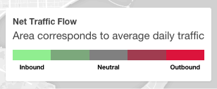

We know, but we're not sorry. Too much cool data to get to.
Some questions you may have:
-
What do the colors mean!?
The colors are indicative of the net flow of traffic at a station.
Green means that there are more incoming trips that outgoing trips on a daily basis, and red means the opposite.
If it's the numbers that are getting you, then you should know that green
means roughly 60% of trips are outgoing, and red
means only about 40% of trips are outgoing. The colors blend in between! 
- What do the areas mean!?
The areas show the relative traffic at each station, measured by total daily arrivals and departures.
-
Why do those lines show up when I do the hover thing?
Another great question. Those are the most popular trips into (green) and out of (red) of the station! If you hover over some of the smaller stations, you see that they don't have lines show up :( . That's because we only show routes that are taken more than 500 times.
-
Where can I find out more?
How about here, here, or here.